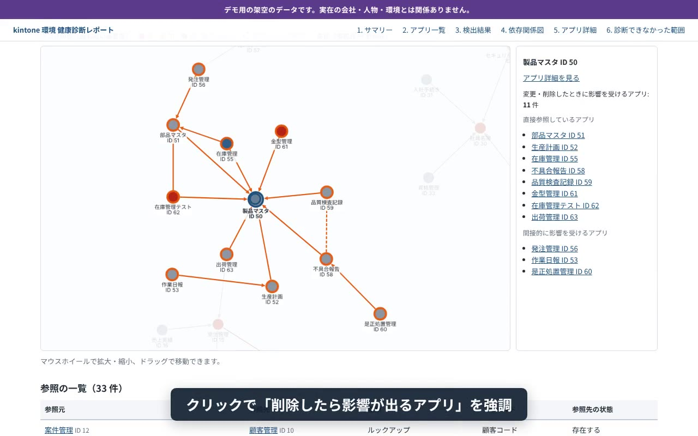

kintone環境の「健康診断」を、
貴社の新しい支援メニューに。
お客様のkintoneの全アプリを読み取り専用で巡回し、放置アプリ・権限の穴・重複・アプリ間の依存関係を、1つの診断レポートにまとめます。「どこから手を付ければよいか」が一目で分かるので、改善提案のきっかけになります。
35秒のデモ動画です。表示しているのはすべて架空の会社のデータです。
お客様の環境を、安心して診断できる設計です
パートナー様が最初に気にされる「お客様の環境に影響はないか」「データはどこへ行くか」に、仕組みで答えています。
書き込みません
読み取り（GET）以外の通信は、ツールの中で送信する前に止めます。アプリやレコード、設定を変えることはありません。
外部に送りません
取得したデータは、診断を実行するPCの中だけに保存します。レポートも、開いたときに外部と通信しない1つのファイルです。
レコードの中身は読みません
読むのはアプリの設定と、レコードの件数・最終更新日時・更新者だけです。顧客名や金額などの中身は取得しません。
12項目を自動でチェックします
検出した問題ごとに、重要度（高・中・低）と「どう直せばよいか」の目安を添えます。データが足りず判定できなかった項目は「問題なし」と区別して表示するので、見落としを安全側に倒せます。
使われ方
- 放置アプリ
- 空のアプリ
- 重複候補（名前と項目の類似度）
権限
- Everyone にアプリ管理権限
- 有効なアプリ管理者がいない
- 作成者が無効・削除済み
- 個人情報らしい項目を Everyone が閲覧可能
カスタマイズ
- 信頼するCDN以外からのJS/CSS読み込み
- 無効のまま残っているプラグイン
構成と診断範囲
- 壊れた参照（参照先アプリがない）
- アプリ一覧に出ないアプリ
- 診断できなかったアプリ
診断のあとが、貴社のお仕事になります
レポートは「問題の一覧」で終わらず、優先順位と判断材料までそろえています。
- 総合所見とリスクの高い順トップ10最初の2ページで、お客様の情報システム部門に状況が伝わります。
- アプリ同士の依存関係図アプリをクリックすると、削除・変更したときに影響が出るアプリを強調します。統合や廃止の相談に使えます。
- アプリごとの「削除してよいか」の判断材料参照元、最終利用、管理者、カスタマイズ、プラグインを1枚にまとめています。棚卸しや運用ルール作りの見積もりの根拠になります。

ご依頼の流れ
診断は当方で代行します。貴社にツールを導入していただく必要はありません。
お客様の同意と管理者アカウント
診断の目的と読み取る情報をお客様にご説明いただき、kintoneのシステム管理者アカウントをご用意いただきます。説明用の資料はこちらで用意します。
診断の実行
読み取り専用で全アプリを巡回します。検証環境での実測からの推計で、850アプリの環境なら収集は20分前後です。
レポートの納品
HTML・PDF・CSVでお渡しします。貴社のロゴと社名を入れられるので、そのままお客様にお出しいただけます。
無料モニターのパートナー様を募集しています
貴社のお客様の環境で、1回無料で診断します。条件は、診断後に感想をお聞かせいただくことと、匿名での事例紹介が可能かどうかのご確認だけです。
ご感想だけでも大歓迎です
- お客様にこの診断を提案してみたいと思いますか
- 単発の診断・定期診断として、いくらならお客様に出せそうですか
- 足りないと感じる項目はありますか
ひとことのご返信でも、今後の開発の優先順位づけに使わせていただきます。
よくあるご質問
どんな環境でも診断できますか
パスワード認証が使えるシステム管理者アカウントが必要です。IP制限や二要素認証、SAML認証のみの環境では、事前に確認させてください。
メンバーになっていないスペースのアプリはどうなりますか
アプリ一覧に出ないアプリもIDから見つけ、設定だけを読みます（レコードやJSファイルは読みません）。お客様が望まれる場合は、設定も読まないように切り替えられます。
アプリの閲覧数や利用者数は分かりますか
kintoneのAPIでは閲覧数を取得できないため、「直近の更新者数」を利用者数の目安として表示しています。レポートにもその旨を明記します。
取得したデータはどうなりますか
診断を実行するPCの中だけに保存し、レポート納品後、取り決めた期限までに削除します。